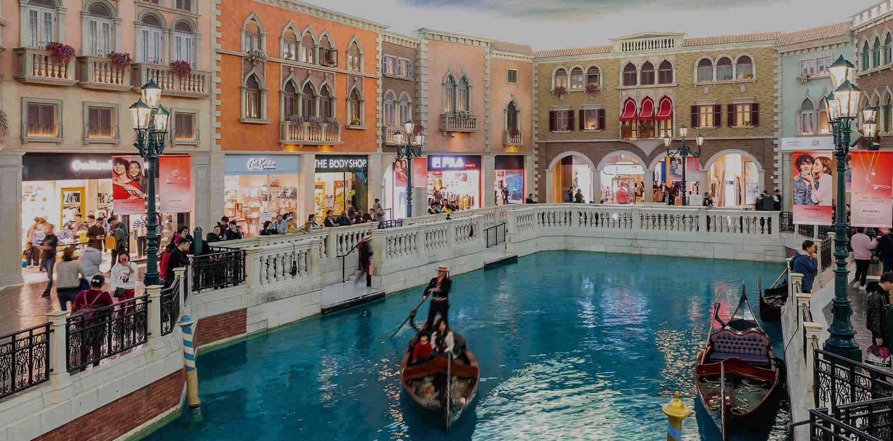
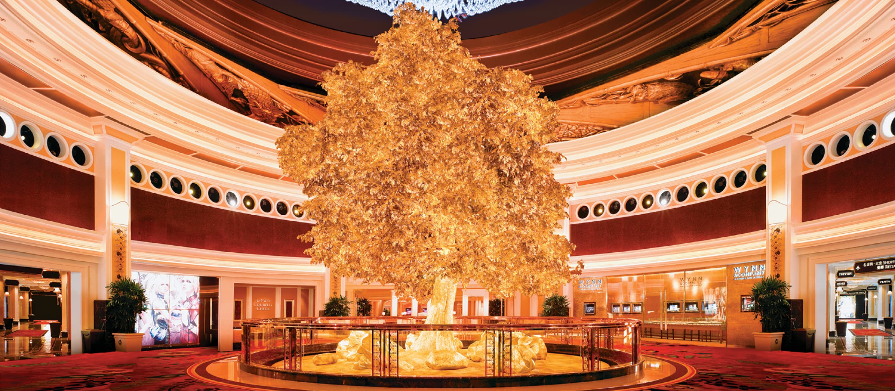

材料说明：本文讨论空间与行为机制；澳门公开场景、其他地区研究及本文推断分别看待。未实测澳门场馆的内部参数，不把一般设计可能性写成逐家已验证的做法。
一、时间是怎么消失的
很多去过澳门赌场的人都有过同一种体验：进去时天还亮着，出来时已经深夜，中间那几个小时像被谁剪掉了。没有人强迫你留下，也没有明显的信号提醒你该走了，你只是"再玩一把""再看看"，然后时间就不见了。
这种体验常被笼统地称为"沉浸"。但沉浸不是一种天然形成的氛围，而是一项被长期打磨的工程。它由空间、光线、声音、气味、座椅、机器反馈等一整套要素共同制造，本文从延长停留、减少中断与持续参与的角度分析这些要素。理解这套工程，比讨论"赌场是不是很迷人"更有价值，因为它揭示了人的注意力、时间感和奖赏系统是如何被外部环境影响的。
值得注意的是，这套工程主要通过环境和活动本身组织体验。它不锁门，不催促，通常不直接要求访客停留。它做的事情更隐蔽：减少一些能提醒人暂停或离开的线索，让留下成为一种默认状态。人之所以停留，有时不只是因为被吸引，也因为当前活动没有被明显打断。
从产业的角度看，这种"不打断"也可以转化为经营指标：在机时长、操作间隔与投注活动都具有商业意义。由此提出一个分析问题——当环境减少了不适与中断，访客是否更容易继续当前活动？后文讨论空间、光、声、味与反馈时，围绕的是这个问题。具体场馆的经营目标、内部参数与设计动机，仍需对应材料支持。
二、沉浸不是玄学，是三层结构的叠加
如果把"沉浸"拆开看，它至少包含三层：感官层被包裹，认知层被占用，时间线索被削弱。
感官层指的是视觉、听觉、嗅觉、触觉等通道被连续、稳定地喂给信息，可能使人较少注意"我在哪里""现在几点""我该不该走"。这里的关键词不是"强烈"，而是"连续"——强烈的刺激可能引发警觉，部分持续刺激则容易逐渐退到背景。神经系统对恒定输入的反应是自发降低表征权重，其中涉及感官适应与习惯化等过程：香水闻久了就不存在了，噪音听久了就背景化了。赌场设计正是利用了这一机制：尽量减少眩光、杂音与异味等不适，但始终在那里，于是被感知系统归入"无需处理"的那一类。这可以降低环境本身对注意力的打断，但不意味着判断能力因此消失。
认知层指的是工作记忆和元认知被挤占。"我玩了多久""我还剩多少钱""我原本打算花多少"这类问题都需要主动调取，而在高占用状态下，主动调取的成本变高，因而可能被推迟。推迟不等于遗忘，而是暂时没有被提到前台。这里的关键在于，有意识地核对预算与时间需要注意资源，自我监控也可能受到习惯和外部提醒的帮助。当环境的每一秒都在提供一个新的可加工对象时，主动停下来核对信息就可能变得更困难。
时间层是最关键的一层：当外部世界的时间线索减少，人对时长的估计就失去了校准物。人对时间的判断从来不是靠某个内部时钟独立完成的，而是靠外部线索（光照、钟表、日程、事件边界）与内部节律共同建构。前者一旦被削弱，主观时长就会偏离客观时长。
这三层不是并列的装饰，而是相互加固的。光线削弱节律线索，动线压缩注意资源，机器反馈持续点燃奖赏系统，三者叠加之后，主观上"才过了一会儿"和客观上"已经三小时"就能同时成立。
三、澳门语境：从半岛老店到路氹的室内城市
讨论这套工程，必须先说明澳门的一种空间特点：路氹部分大型综合度假村通过内部走廊、连桥与公共空间衔接多种活动，形成类似室内城市的连续体验。这不意味着整片路氹都能不经室外通行。
半岛的老式赌场以葡京为代表，其造型长期被民间叙事赋予"鸟笼""易进难出"的象征性解读。这类说法属于地方性文化诠释而非可验证的设计文件，把它当作设计证据是不严谨的。
真正体现现代设计逻辑的是路氹的大型综合度假村。它的设计内核不是"一个赌博的地方"，而是"一座微型城市"：购物中心、餐饮、剧场、酒店、会展与博彩厅在同一套室内交通系统里串联，威尼斯人一类的主题度假村甚至把室外街景整体搬进建筑内部，在屋顶下重建河道、拱桥与天幕。在部分相连的区域里，访客可以较长时间不经过室外，从天桥走进走廊、从走廊走进商场、从商场走进博彩区，再走进另一家度假村。

图 1：澳门威尼斯人购物区。沿岸建筑、小桥、街灯与水面相互连接，形成可以继续游览的室内街景；这里是购物区，不是博彩厅。图片来源：澳门威尼斯人官网。
这种"室内城市"化产生了一个可能的后果：出门从一个随手可做的动作，变成一个需要专门决策的事件。正常生活里，人会不断被外部世界打断——天色暗了、下雨了、街上有人流了、店要关门了——这些打断看似讨厌，实际上替人完成了时间管理与行为管理。当它们较少出现，人就必须依靠自己内部生成的信号来停止一种活动，而在一种被高度强化的活动中，内部信号未必足以立刻让人停止。
因此澳门的沉浸工程有两个层次：一层是赌场内部的经典手法，另一层是综合体尺度的线索减少。前者作用于机器前的那几分钟，后者作用于整个晚上的时间结构。任何只讨论灯光与音效的分析，都会漏掉后者，而后者可能才是这类综合度假村值得单独观察的特点。
四、空间的算计：进得来，走得不顺
赌场空间设计史上最有名的两套思路，一套是"游戏式"，一套是"游乐场式"。
"游戏式"通常与比尔·弗里德曼强调博彩设备、较低空间尺度及紧凑布局的思路联系在一起。相关设计研究将它与开阔、强调装饰和休憩体验的"游乐场式"空间进行比较。这里关注的是路线、视线与设备之间的关系，不能把这种历史设计思路概括成澳门场馆普遍"不设出口指示"，也不能在缺少平面图和项目资料时，认定兑换处一定设在深处。¹
这些原则背后有一个共同的假设：人的行为对环境的暗示极其敏感，而人在犹豫时倾向于顺从最省力的路径。若从这种思路分析曲折通道，一种可能解释是它让人在每一次转向时都需要重新判断方向，而重新判断的成本可能高于沿眼前路线继续移动。换言之，迷宫不是困住人的装置，而是让"继续向前"成为默认选项的装置。
"游乐场式"则反其道而行，用高天花板、开阔视线、艺术装置和优雅大厅营造松弛与富足感。Finlay等人的一项研究让484名参与者观看不同赌场场景模拟，比较整体设计与照明、人群、色彩、设备分组等细节对情绪和游戏意向的影响。研究表明，整体设计与局部装饰的关系并不简单；愉悦、恢复感或游戏意向的评分，也不能直接等同于真实场馆里已经发生的停留延长。¹

图 2：澳门永利“吉祥树”公共装置。中央树形、环绕的栏杆与建筑层次形成观看中心，对应的是公共空间中的停留体验，不是具体游戏。图片来源：永利澳门官网。
两套思路看似对立，其实解决的是同一个问题的两端：游戏式侧重设备与连续活动，游乐场式侧重环境吸引力与舒适。前者涉及路线和设备的组织，后者作用于情绪与自我评价——在一个体面、漂亮、像艺术品陈列馆的地方多待一会儿，停留也可能获得游览、欣赏与休憩等不同理由。
从空间分析的角度看，路氹综合度假村的公共区域与博彩区可能承担不同任务：前者组织游览、购物和停留，后者组织具体活动。若某条路线持续经过博彩区，它就可能增加接触设备的机会；但是否存在这样的必经路线，需要逐一查看场馆地图，不能把"回房必须经过赌场"当作澳门酒店的共同规则。路径提供机会，不能单独证明参与会发生。
更关键的是尺度问题。部分度假村或区域之间由天桥、走廊和自动扶梯衔接，人可以在不见室外空气的情况下移动很远。"出门"这个动作可能被延后，而出门恰恰是一个能重新接入天气、天色与城市节奏的接口。当到达室外需要更长距离，外部世界就从一个随时可及的背景，变成一个需要专门计划才能抵达的远方。
空间上还有一层更细的处理：视线管理。开阔的公共区域让人看到"很多可能性"，而进入博彩区后视线被柱网、隔断和机器阵列逐步收窄，注意力从"我要去哪里"转向"眼前这一台"。这种从发散到收敛的视觉节奏，本身就是一种注意力的引导装置。具体座椅是否背向通道、隔断是否限制视线，需要对照真实布局，而不能从一般原理推定所有场馆都如此。
五、光：被取消的黄昏
光是沉浸工程里最被低估的一环，它至少做了四件事。
第一件是削弱自然时间线索。"无窗、无钟、照度恒定"是流传很广的概括，不能作为所有澳门博彩厅的实测描述。人体昼夜节律受到光暗周期影响，眼睛接收到的光会通过视交叉上核等通路影响节律与褪黑素分泌；光的强度、光谱、时点、持续时间及既往光暴露都重要。恒定光并不等于没有光，夜间明亮照明仍可能影响觉醒与节律。这里可以成立的判断是：缺少自然天色变化，会减少一种直观的时间参照；不能据此断定进入室内几小时，生物钟就已失去作用。²³
第二件是用明暗对比引导注意力。若桌面比周围环境更亮，这种对比在照明设计上有明确功能：提高台面的视觉显著性，压低周边干扰。人眼对高对比区域天然敏感，于是"看哪里"被环境替你做决定了。与之配套的是眩光控制：避免直射光源和强反射面，让眼睛长时间舒适，因为不适感是可能会把人从任务里拽出来的信号。减少眩光有助于舒适观看，但是否因此延长停留，还需要另外的行为证据。
第三件是把天空变成场景的一部分。威尼斯人购物区的云彩天花，与运河、小桥、建筑立面及分层照明共同构成室内街景；历史照明项目报道也将购物区与博彩厅区别介绍。⁴ 天幕的画面是否变化，与到达人眼的光强和光谱如何变化，是两个不同的问题。仅凭一张蓝天照片，不能判断光的非视觉效应，也不能断定现场一直保持相同短波成分。这里最直接的作用是视觉上的环境连续性：即使访客知道自己在室内，仍能沿着这套街景线索游览。
第四件是减少明暗转换与场景转换。进出室内外时，亮度、声音、温度和活动都会变化，这些变化可能成为一段经历的边界。若人长时间留在相近环境里，边界便较少出现。不过，明暗适应并不是用来计算经过时长的专用时钟，也不能把缺少亮度切换直接写成"身体不再产生关于时间的生理证据"。这里应讨论环境事件对注意与记忆的提示，而不是把它与昼夜节律混为同一种机制。
六、声：不只是背景，而是结果的语义
赌场、商场、餐饮与酒店公共区可以采用不同声景，选择音乐时也会考虑活动性质与现场噪声。具体入口、高额厅或体育区域使用什么乐器、何时切换，不能仅凭一般行业描述替澳门场馆下结论。需要把环境声音的设计可能性，与已经核实的项目做法分开。
音乐本身的效果并不稳定。Noseworthy与Finlay的一项模拟研究发现，不同声音条件会改变时长估计，背景音乐在其条件下反而可能帮助估时。⁵ 所以"音乐让人忘记时间"或"某类音乐让人多赌"都过于粗糙。更合适的理解是：背景声音可能改变气氛、唤醒和杂音的显著性，但它不是主动降噪，也不能保证环境没有意外。效果要看音量、节奏、活动及对照条件。
更直接的研究对象是与结果绑定的音效。多线老虎机可能在返还低于投入时仍播放庆祝反馈，形成"伪装成赢的损失"：感官上出现奖励信号，账面上却是净损失。Dixon等人的模拟实验发现，参与者常把这种结果归为赢，并高估赢的次数；将声音改成与损失匹配的反馈，会改变结果判断。⁶ 这是特定实验中的结果，不等于每台机器或每位玩家都会同样反应。
这一点值得展开。声音在这里不是氛围，而是告诉大脑"这是赢还是输"的语义载体。人脑判断一次赌博的结果，并不完全依赖数字，而依赖一整套感官印象：音效的上升还是下降、动画的绽放还是熄灭、震动的强度与节奏。当这些印象与真实数值脱钩，主观记忆就可能出现偏差——玩家记住的是"亮起来的那几次"，而不是账面上的净额。后续实验进一步显示，若把这类结果与负面声音配对，被试的行为反应会更接近"损失"而非"赢"。也就是说，改变声音可能影响人怎样理解结果；这不能单独证明大脑中发生了某一种固定的分类变化。
音效还有第二重功能：为节奏提供边界。操作、等待、结算与下一次操作构成连续活动，声音帮助玩家辨认阶段。不过，沉浸并不总意味着按键越快越好：Murch等人的研究发现，沉浸程度会调节获奖后的停顿，较强沉浸可以伴随较长的获奖后停顿。⁷ 因此不能把所有动画和音效都概括成"越短越好"；节奏既包括推进，也包括等待和观看结果。
七、被忽略的感官：气味、座椅、温度与触感
香氛常被列为隐性手段。关于环境气味的研究与综述提示，气味可能影响情绪与场所评价，但结果依赖气味类型、强度、情境及研究设计；赌场香氛研究也不能直接推广到所有场馆。⁸ 气味与情绪、记忆有联系，不等于它能绕过一切理性审查，更不意味着人说不出喜欢的理由，就不会质疑这种感受。可以讨论的是：当气味较少被主动辨认时，它仍可能参与人对空间舒适、清洁或熟悉程度的整体评价。
触觉和人体工程学同样值得观察：座椅支撑、机身与身体的距离、服务面板位置、触控灵敏度，以及按钮的阻尼和行程，都会影响连续操作是否省力。舒尔关于拉斯维加斯机器赌博的研究讨论了设备与身体之间的适配。⁹ 但这不支持一个通用的"座椅略深、扶手略紧，让人难起身"配方。缺少具体产品资料与测量时，合理的分析应停留在舒适、可达、反馈清楚和中断成本这些关系上，而不把猜测写成精确的设计最优解。
温度、湿度与空气流动同样被纳入设计。温度过高或过低都可能影响舒适与觉醒，不能把"偏凉"当作所有人的相同反应，均匀的气流避免闷热带来的烦躁，而这些参数一旦稳定，人可能较少注意它们——减少不必要的不适，是环境控制的一项价值。真正好的气候控制不会让人觉得"这里空调很舒服"，只会让人既不冷也不热、因而想不起来这件事。
镜面、休息区、洗手间与餐饮位置，也可以作为空间观察的问题：它们怎样提供停顿、改变视线或连接路线？但本文没有足够现场资料证明澳门赌场普遍少镜子、休息区必在边缘，或洗手间一定要求人穿过博彩区。与其把这些说成已有结论，不如将它们保留为需要对照平面图和现场观察检验的问题。
八、机器与反馈：奖赏系统是怎么被劫持的
即使空间做得再精致，真正让人反复投入的还是游戏本身的强化结构。
老虎机常被借助变比率或随机比率强化解释：奖励不可预测地出现，使每一次操作都像"可能就是中大奖的那一次"。这种不确定性可以参与行为的维持，但并不意味着每个人都难以停止——比起固定奖励，随机奖励更能维持高频操作。心理学的经典实验早已表明，按未知比例给予奖励的可以形成较高反应速率和较强的消退抵抗，而且消退之初会出现反应频率短暂飙升的现象。用这一学习原理解释机器赌博时，还需要考虑不同游戏、反馈和玩家差异：它不承诺什么，只维持可能性。
比不确定性更值得区分的是"近失"。两个符号对齐、第三个错位，客观上是输，主观上却可能像"差一点就赢了"。一些实验发现，近失会影响唤醒、继续参与的主观意愿及相关脑活动；但主观意愿、脑活动与实际持续投注不是同一个指标。Pisklak等人的受控实验没有支持近失强化持续反应的假说。¹⁰ 因此不能说近失对所有人都产生同样唤醒，也不能把某些脑区激活直接解释成必然追加投注。关键在于：相同的损失，可能被理解为不同意义，而意义是否改变后续行为仍需检验。
还有一层容易被忽略的设计：金钱的抽象化。现金换成筹码，筹码再变成电子余额，最后只剩屏幕上的数字。这可能改变成本的显著性，但不是每增加一层抽象，风险承担就必然上升，因为人对"钱"的负面情绪反应高度依赖具象感知——数钞票时的重量、递出去时的动作，都是成本的提醒。当支付变成一次轻触，取出现金这一中断可能减少；不同支付媒介的行为效果仍需分别检验。不能把无现金钱包等同于现场信贷，也不能推定澳门场馆都允许直接在机器上办理信用额度。
累积奖池、进度条、多人共享机、连锁奖励等机制，则把"等待"本身设计成一种有内容的体验。等待不再空白，而是充满"快要到了"的暗示。动画时长、音效长度、结算节奏被反复调校，可以影响连续操作怎样衔接，但是否有意消除反思、实际怎样影响间隔，需要具体设计资料与行为数据支持。多人共享机还有一个附加作用：它把操作社会化。旁人中奖时的欢呼可能形成社会线索，也可能让旁观者停下来观看；不能据此认定所有人的参与或离开都会受到同方向影响。
九、数据与校准：沉浸不是一次设计，而是持续调参
前述所有手法都可以被测量，这正是它们能够被改进的原因。
舒尔在出版社公开导论中已介绍，联网机器不仅承担游戏功能，也能参与数据收集与营销，行业展示中也出现玩家追踪系统。¹¹ 这是一项历史研究记录，不是澳门当前系统的配置清单。 但某家澳门场馆究竟记录哪些字段、如何关联餐饮与活动，以及是否据此优化动画或座椅，不能从产品能力反推为已经部署的事实。如果能合法获得操作间隔、停留和离开节点等数据，研究者可以进一步提出可检验的问题：不同节奏、设备或位置，是否对应不同的使用方式？
于是设计有机会从经验总结走向数据反馈：提出改动、观察结果，再决定是否推广。不过，"数万小时真实在机时间"、逐参数实时调优，以及实验室小效应在现场被放大的说法，需要项目数据支持，不能仅凭一般商业逻辑确认。相关性也不足以证明某一设计导致更长停留。
数据还带来另一种分析可能：不同会员服务、活动偏好与到访频率，可能对应不同体验。但服务分层不等于机器随个人即时改变赔率或开奖结果，也不能证明每个界面与奖池都按在机时长进行个性化调整。需要区分会员奖励、展示内容、服务响应与受规则约束的游戏结果；本文不推定具体澳门场馆采用了哪一套内部配置。
需要注意的是，这一层的内部参数几乎没有公开资料，能确认的是部分公开产品能力；逐家场馆的部署、优化目标和阈值仍缺证据。把它写进分析，是为了说明"沉浸"并非静态美学，而也可能包含数据反馈与迭代；把它当作可引用的量化结论，则超出了现有证据的许可范围。
十、时间感的生理合成：从节律到事件边界
把前面的线索拼起来，"沉浸感"在身体上大致是这样合成的。
时间感方面，人是靠外部线索和内部节律共同估计时间的。无窗、恒定照度、均质声景、缺乏事件边界的动线，共同削弱了外部线索的更新，可能改变时长判断；低估并不是所有条件下都发生。这里有两个层面：一是"前瞻式"计时，即正在经历时的实时估计，它高度依赖注意资源——用于计时的注意减少时，时长可能被低估；二是"回顾式"计时，即事后回忆时的长度判断，它依赖记忆中的事件数量——当一段时间里缺乏独特、可提取的事件，回忆起来就会显得"很短"。部分重复活动环境可能出现这两个条件：注意力被持续占用，而经历的内容高度重复，缺乏可标记的差异。这可以帮助解释一些人回忆一整晚时感到"很短"，而同样内容分散在几个不同的地点、不同的天气中度过，回忆起来却会长得多。
唤醒方面，心率、皮电等自主神经指标会随着近失、胜利音效、连续反馈而反复抬升。唤醒本身并不等于快乐，它可以反映兴奋、紧张或挫败等不同状态，不能直接等同于继续投入的意愿。高频的小幅唤醒叠加在一起，可能让人处于一种既紧张又不愿中断的悬置中。这种悬置很消耗能量，但消耗感往往在离场之后才被察觉——部分人投入当前活动时，可能较少评估疲劳，而疲劳又恰好在最不适合做决定的时候才被意识到。
十一、注意力与自我监控的塌陷
从认知角度看，沉浸可以用注意资源有限来解释。当视觉（聚焦照明、屏幕动画）、听觉（胜利音效、环境声）与触觉（快速反馈）持续占据通道时，用于自我监控与元认知的资源被挤占。"我玩了多久""我还剩多少钱"这类问题需要主动调取，而在高占用状态下，主动调取的成本变高，于是被自然推迟。
当这种推迟带有方向性——比如"伪装成赢的损失"让人高估胜率——沉浸就不只是主观感受，而是带有系统性偏差的判断状态。但偏差不必然朝同一方向，是否继续还受预算、偏好和外部提醒等因素影响。这才是整套设计真正值得警惕之处：它不是简单地让人"更快乐"，而是可能改变人对成本与时长的判断，而这两项恰好是决定要不要继续的核心变量。
人类学家娜塔莎·道·舒尔在拉斯维加斯做了十几年田野，把机器赌博者追求的状态称为"机器迷境"：在她观察的部分强迫性机器赌博者身上，日常烦恼、社交要求乃至身体感知逐渐退场，继续活动本身可以压过赢的目标。这个描述之所以有分量，是因为它来自长期观察而非实验室推演，它指出持续活动可能成为体验目标；研究对象主要在拉斯维加斯，不能直接代表所有澳门访客。⁹
从心理学谱系看，"机器迷境"与心流有相似之处，但也有重要差别。心流通常伴随技能与挑战的匹配、清晰的目标与即时反馈，且往往带有成长感；而迷境更接近一种解离状态，目标被简化为"维持当前活动"，反馈被机器接管，成长感消失。区别在于：心流是人在活动中获得掌控，迷境是人在活动中交出掌控。这里用于比较两类体验，不是把所有沉浸都诊断为解离，也不是认定所有设计都以交出掌控为目标。
十二、一个整合的结构
| 外部要素 | 可能涉及的过程 | 需要区分的结果 |
|---|---|---|
| 室内照明与较少的自然天色变化 | 昼夜节律、觉醒及时间参照 | 节律变化不等于即时低估时长 |
| 路线、视线与重复活动 | 注意分配与事件边界 | 连续移动不等于无法离开 |
| 环境声音与结果音效 | 背景气氛、结果理解与唤醒 | 觉得赢了不等于净获利 |
| 不确定奖励、近失与返还反馈 | 学习、期待及结果解释 | 想继续不等于实际持续投注 |
| 玩家追踪与管理系统 | 记录、分析及可能的反馈 | 产品能力不等于澳门场馆已部署 |
这张图要说明的不是单线因果，而是不同过程可能同时参与、相互影响的结构。任何单一要素——比如"音乐"或"灯光"——单独拿出来效应都有限，真正起作用的是组合。而且组合的方式是减法与加法并用：既分析环境减少了哪些中断，也分析活动增加了哪些期待和反馈。
表中的数据反馈也值得保留：在具备合适数据和明确设计目标时，行为记录可以成为后续调整的依据。但这是一条需要逐项验证的关系，不能把它画成所有澳门场馆都已运行的必然因果闭环。沉浸因此可以同时从空间、连续活动和评估迭代三个尺度观察，而不必把复杂结果归给某一盏灯、某一种香气或某个按钮。
参考资料
- Finlay等：Casino Décor Effects on Gambling Emotions and Intentions，赌场整体设计与局部装饰的场景模拟研究。
- NIGMS：Circadian Rhythms，光暗与昼夜节律。
- CDC/NIOSH：Effects of Light on Circadian Rhythms，不同时间光暴露的作用。
- 《Taste of Light in Macau》历史照明项目报道，2008年，购物区与博彩厅的照明；并非当前现场实测。
- Noseworthy与Finlay：音响、设计及时间估计，2009年。
- Dixon等：Using sound to unmask losses disguised as wins in multiline slot machines，声音与结果分类。
- Murch等：Post-reinforcement pauses during slot machine gambling are moderated by immersion，2024年，沉浸与获奖后停顿。
- Spence：Scenting Entertainment，2021年，环境气味相关研究综述。
- 舒尔《Addiction by Design》出版社导论节选；MIT对该研究的介绍。本篇未声称通读全书。
- Pisklak等：The Near-Miss Effect in Slot Machines，2019年在线发表，2020年刊载。
- 《Addiction by Design》公开导论，第3—4页，联网机器、玩家追踪与数据收集。
留言
由 Disqus 提供。